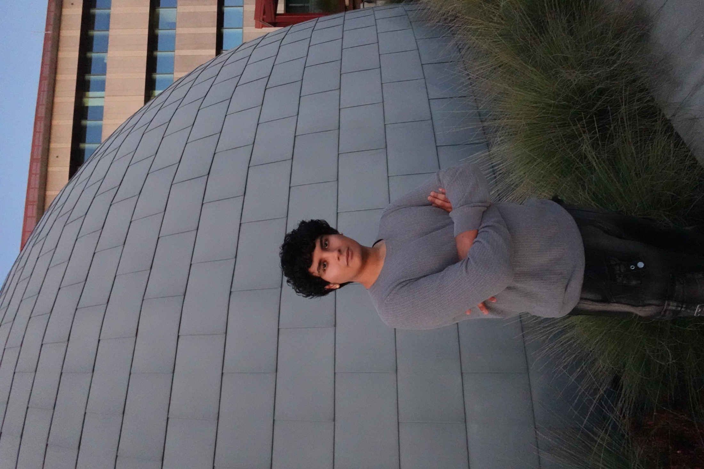

About Me
My journey and career

About Me
I am a intuitive designer, creating products, art, and engineering ideas. I bridge the gap between designers and engineers, form and function.
UI/UX is my current exploration into modern design questions. My approach is to understand the problem at the root of where it happens.
I combine logistics with creative problem solving, real solutions for users and founders. With expertise spanning, production design, product research, and development. I bring a grounded perspective to challenges, believing impact through design is about being close to the issue.
When I'm not designing, i'm working on art, exploring the earth, and hiking!
Work Experience
Aug 2025 - Present
Brand/Graphic Designer
CasaLikha Architects
Crafting visual identities and digital experiences that bridge client vision with architectural innovation, strengthening brand positioning through strategic design and user-centered communication.
Nov 2025 - Dec 2025
Google Brand Ambassador
Mosaic North America
Translating complex technical capabilities into user-friendly narratives, utilizing A/B testing and qualitative feedback to optimize engagement and drive product adoption.
Jun 2025 - Aug 2025
API Engineer Intern
Project Optimus, Tesla
Designed and tested AI-driven interfaces for humanoid robots, reducing test cycles from 10 minutes to 3 minutes through user-centered design thinking and collaborative UX improvements.
Dec 2024 - Present
Founding President
Friends of Figma
Leading 200+ member design community, fostering collaboration between Product Design and Web Development teams to create industry-aligned learning experiences and design sprints.
Aug 2024 - Mar 2025
Lead Sales Associate
OrangeTheory Fitness
Enhanced member experience through personalized service and relationship building, managing operations for 200+ members while training teams in human-centered customer engagement.
Jun 2020 - Nov 2023
Music Producer
Sumerian Records
Directed creative vision across 40+ projects, collaborating with diverse talents to craft cohesive artistic identities and oversee album campaigns with a cumulative 16 million streams.
Skills & Expertise
Design
- • Product Design
- • UI/UX Design
- • Design Systems
- • Prototyping
- • User Research
Motion & Graphics
- • Motion Graphics
- • Animation
- • Graphic Design
- • Illustration
- • Brand Identity
Tools
- • Figma
- • Adobe Creative Suite
- • After Effects
- • Sketch
- • Prototyping Tools